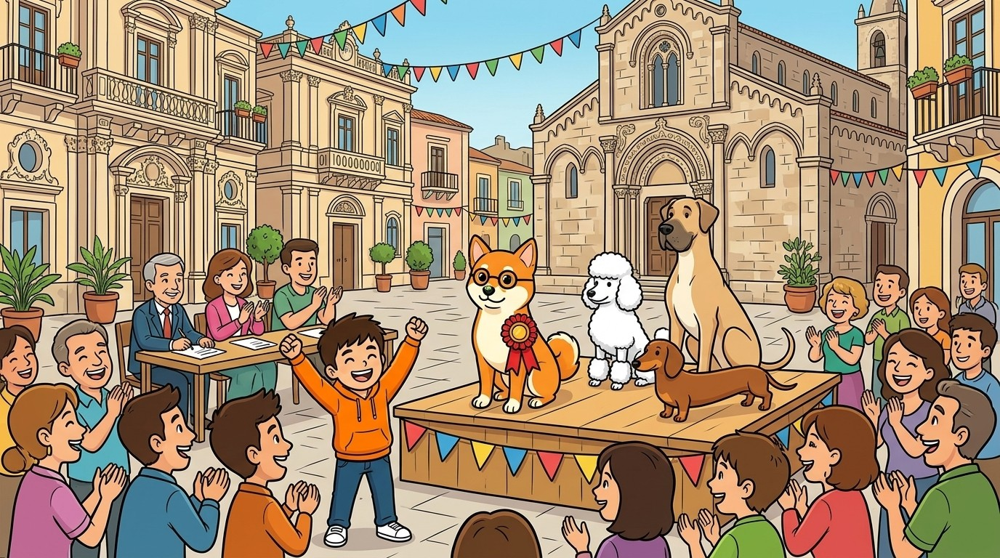

Domenica, al parco. Vlad si gira un attimo e Luce sparisce. Scrive subito un cartello e lo mostra al vigile:
CERCASI CANE. Si chiama Luce.
Il vigile si gratta la testa: «Al parco ci sono cinquanta cani! Grande o piccolo? Di che colore?». Vlad riscrive il cartello:
CERCASI cagnolina piccola, arancione e bianca, con gli occhiali tondi. È golosa: forse è vicino ai gelati!
Che cosa hanno aggiunto le parole in grassetto?
In questo capitolo impari a
riconoscere l'aggettivo qualificativo e accordarlo con il nome;
usare i gradi: comparativo e superlativo, anche le forme speciali;
riconoscere gli aggettivi determinativi: possessivi, dimostrativi, indefiniti, numerali…;
fare l'analisi grammaticale dell'aggettivo.
Sul sito vladinc.ru/libri trovi gli esercizi interattivi e l'audio di questo capitolo. Inquadra il QR o scrivi il codice che vedi accanto a ogni esercizio.
Parte 1 · Ripasso grammaticale37
RIPASSO
Per cominciare
Senza aggettivi il mondo sarebbe in bianco e nero: tutti i cani sarebbero uguali, e anche tutti i gelati. Vediamo quanto ricordi.
1●Scrivi tu il cartello per ritrovare un animale (vero o inventato): usa almeno quattro aggettivi.
2●Tocca o sottolinea tutti gli aggettivi.✎CFC-52
Il mare calmo e azzurro brilla sotto il sole caldo.
Una vecchia barca rossa dorme sulla spiaggia deserta.
Luce è una cagnolina curiosa, allegra e golosa.
risposte esatte / 9
3●Scegli la forma giusta dell'aggettivo.✎CFC-53
le scarpe (nuovi / nuove)
un gelato (fresco / freschi)
i ragazzi (felice / felici)
la torta (dolce / dolci)
gli zaini (pesanti / pesante)
le pareti (blu / blue)
risposte esatte / 6
LuceIo sono piccola, arancione, golosa, simpatica, bellissima…
Vlad…e anche modesta! Tutte queste parole sono aggettivi: dicono com'è il nome.
4 · L'aggettivo38
RIPASSO
Lezione 1
1
L'aggettivo qualificativo
Definizione
L'aggettivo è la parte variabile del discorso che si unisce al nome per descriverlo o precisarlo. L'aggettivo qualificativo dice una qualità del nome: com'è, che forma, che colore, che carattere ha.
L'aggettivo si accorda sempre con il nome: prende il suo stesso genere e numero.
Classe
maschile sing. / plur.
femminile sing. / plur.
Esempio
prima classe (4 forme)
-o / -i
-a / -e
buono, buoni, buona, buone
seconda classe (2 forme)
-e / -i
-e / -i
felice, felici
invariabili
sempre uguali
blu, rosa, viola, pari, dispari
Dove si mette?
Di solito dopo il nome, ma può stare anche prima. A volte il significato cambia:
un uomo grande (alto e grosso) · un grande uomo (importante)
un amico vecchio (anziano) · un vecchio amico (da tanto tempo)
Con il nome o con il verbo
L'aggettivo può stare accanto al nome (la cagnolina golosa) oppure dopo il verbo essere (Luce è golosa). Nell'analisi logica vedrai che sono due lavori diversi.
Ricorda
Se un aggettivo si riferisce a nomi maschili e femminili insieme, va al maschile plurale: Vlad e Luce sono stanchi.
Attenzione
Gli aggettivi in -co / -go seguono le regole dei nomi: bianco → bianchi, simpatico → simpatici, lungo → lunghi.
Trucco
Per trovare l'aggettivo chiediti: com'è?Una barca… com'è? Vecchia, rossa. Ecco i due aggettivi.
Parte 1 · Ripasso grammaticale39
RIPASSO
Lezione 2
2
I gradi dell'aggettivo
Una qualità si può avere più o meno «forte». L'aggettivo qualificativo ha tre gradi.
Grado
Come si forma
Esempio
positivo
la qualità e basta
Luce è veloce.
comparativo di maggioranza
più … di / che
Luce è più veloce del gatto.
comparativo di minoranza
meno … di / che
Il gatto è meno veloce di Luce.
comparativo di uguaglianza
tanto … quanto · così … come
Vlad è (tanto) alto quanto Marco.
superlativo relativo
il più / il meno … di / tra
Luce è la più golosa della famiglia.
superlativo assoluto
-issimo · molto … · stra-, arci-
Luce è golosissima / molto golosa.
Le forme speciali
Alcuni aggettivi, oltre alle forme normali, hanno comparativi e superlativi speciali che vengono dal latino.
positivo
comparativo
superlativo assoluto
buono
migliore (più buono)
ottimo (buonissimo)
cattivo
peggiore (più cattivo)
pessimo (cattivissimo)
grande
maggiore (più grande)
massimo (grandissimo)
piccolo
minore (più piccolo)
minimo (piccolissimo)
Attenzione
Migliore, peggiore, maggiore, minore sono già comparativi: non si dice più migliore. E ottimo, pessimo sono già superlativi: non si dice molto ottimo.
LuceQuesto biscotto è più migliore dell'altro!
VladBasta «migliore», Luce: il «più» è già dentro!
4 · L'aggettivo40
ESERCIZI
Esercizi
Lezioni 1 e 2 · ● facile ●● medio ●●● difficile
4●Accorda l'aggettivo tra parentesi con il nome.✎CFC-54
le onde (alto)
i fiori (rosa)
gli amici (simpatico)
le strade (lungo)
i bambini (gentile)
Vlad e Luce (stanco)
risposte esatte / 6
5●Completa con il comparativo indicato.✎CFC-55
(maggioranza) L'Etna è alta Vesuvio.
(minoranza) Il gatto è goloso Luce.
(uguaglianza) Giulia è brava Marco.
risposte esatte / 6
6●●Di che grado è l'aggettivo evidenziato?✎CFC-56
Questa granita è buonissima.
Vlad è il più alto della classe.
Il mare oggi è calmo.
Luce è meno ubbidiente del gatto.
risposte esatte / 4
7●●Sostituisci con la forma speciale.✎CFC-57
più buono →
cattivissimo →
più piccolo →
grandissimo →
buonissimo →
più cattivo →
risposte esatte / 6
8●●Vero o falso?✎CFC-58
«Felice» ha quattro forme. VF
«Blu» è un aggettivo invariabile. VF
«Più migliore» è corretto. VF
«Un vecchio amico» e «un amico vecchio» vogliono dire la stessa cosa. VF
risposte esatte / 4
9●●●Scrivi tu. Confronta due animali che conosci: usa un comparativo di maggioranza, uno di uguaglianza e un superlativo.✎CFC-59
Parte 1 · Ripasso grammaticale41
RIPASSO
Lezione 3
3
Gli aggettivi determinativi
Gli aggettivi determinativi (o indicativi) non dicono una qualità: precisano il nome. Dicono di chi è, dove si trova, quanti sono, quale è.
Tipo
Che cosa indica
Esempi
possessivi
a chi appartiene
mio, tuo, suo, nostro, vostro, loro, proprio
dimostrativi
dove si trova (vicino o lontano)
questo, quello (codesto)
indefiniti
una quantità o un'identità non precisa
ogni, qualche, alcuni, molto, poco, tanto, troppo, nessuno, tutto
numerali
un numero o un ordine
cardinali: due, dieci · ordinali: primo, decimo
interrogativi ed esclamativi
una domanda o un'esclamazione
quale? quanto? che? · che bello! quanta gente!
Quello e bello
Davanti al nome si comportano come l'articolo: quel cane, quello zaino, quell'albero, quei cani, quegli zaini, quegli alberi · bel cane, bello zaino, bell'albero, bei cani, begli zaini.
Aggettivo o pronome?
Se la parola sta accanto a un nome è un aggettivo: Questo libro è mio. Se sta da sola, al posto del nome, è un pronome: Questo è mio.
Gli aggettivi determinativi di solito stanno prima del nome e spesso al posto dell'articolo: il libro → questo libro, ogni libro, tre libri.
4 · L'aggettivo42
ESERCIZI
Esercizi
Lezione 3 · ● facile ●● medio ●●● difficile
10●Scrivi ogni aggettivo nella colonna giusta.✎CFC-60
nostro · questa · ogni · terzo · quale · loro · quegli · qualche · cinque · quanti
possessivo
dimostrativo
indefinito
numerale
interrogativo
risposte esatte / 10
11●●Aggettivo (A) o pronome (P)?✎CFC-61
Questa granita è al limone. AP
Questa è la mia. AP
Molti amici sono venuti. AP
Molti sono rimasti a casa. AP
Il mio cane si chiama Luce. AP
Il tuo zaino è blu, il mio è rosso. AP
risposte esatte / 6
12●●Completa con la forma giusta di quello.✎CFC-62
gabbiano
scoglio
isola
studenti
fiori
amici
risposte esatte / 6
13●●●Completa l'analisi grammaticale degli aggettivi: «Quei due gatti sono più furbi di Luce.»✎CFC-63
aggettivo
tipo
altre informazioni
Quei
due
più furbi
risposte esatte / 6
14●Rimetti in ordine le parole e scrivi la frase.✎CFC-64
è · Luce · cagnolina · golosissima · una
gelato · questo · buono · è · più · quello · di
Sul sito c'è anche un esercizio in più, solo online: CFC-65 «Bel, bello o bell'?».
Parte 1 · Ripasso grammaticale43
RIPASSO
Dal testo alla grammatica
Il concorso più simpatico
Racconto di Vladislav Balesnyi
In piazza a Taormina c'era un concorso speciale: «Il cane più simpatico dell'estate».1 Ho iscritto Luce, anche se lei non era molto convinta.
Gli altri concorrenti erano bellissimi. C'era un barboncino bianco e profumato, un alano enorme e tranquillo, un bassotto lungo come un salame.2
Quando è toccato a Luce, lei si è seduta, ha sistemato i suoi occhiali tondi e ha fatto il suo trucco migliore: ha finto di dormire.3 Tutti ridevano.
Poi un bambino ha fatto cadere un cono al pistacchio. Luce si è svegliata all'improvviso ed è stata più veloce di tutti: il gelato è sparito in un secondo.4
La giuria non ha avuto dubbi. Luce ha vinto una coccarda rossa e una scorta di biscotti. Era la cagnolina più felice di tutta la Sicilia.5

♪Ascolta il racconto codice CFC-68
Comprensione del testo
15●Vero o falso?✎CFC-66
Il concorso è a Catania. VF
Luce finge di dormire. VF
Il gelato era alla fragola. VF
Luce vince una coccarda. VF
Un po' di grammatica
16●●Nella frase 2 sottolinea gli aggettivi qualificativi. Poi trova nel testo un superlativo assoluto, un superlativo relativo e un aggettivo possessivo.✎CFC-67
sup. assoluto: sup. relativo: possessivo:
4 · L'aggettivo44
RIPASSO
Mappa del capitolo
L'aggettivo
QUALIFICATIVOcom'è?
DETERMINATIVOdi chi? quale? quanti?
accordogenere e numero del nome
prima classebuono, -a, -i, -e
seconda classefelice, felici
gradipositivo
comparativopiù, meno, tanto…quanto
superlativoil più… · -issimo
possessivimio, loro
dimostrativiquesto, quello
indefinitiogni, qualche
numeralitre, terzo
interrogativiquale? quanto?
Accanto al nome = aggettivo · da solo = pronome
Il capitolo in 5 righe
L'aggettivo descrive o precisa il nome e si accorda con lui.
Il qualificativo dice una qualità: piccola, golosa.
Ha tre gradi: positivo, comparativo, superlativo.
Migliore, peggiore, ottimo, pessimo… sono forme speciali.
I determinativi dicono di chi, quale, quanti: mio, questo, ogni, tre.
Errori comuni
più migliore, molto ottimomigliore, ottimo
le pareti bluele pareti blu (invariabile)
quelli zaini, quei alberiquegli zaini, quegli alberi
Vlad e Luce sono stanchesono stanchi (maschile plurale)
Parte 1 · Ripasso grammaticale45
VERIFICA
Verifica · Capitolo 4
Nome ____________________Data ______________ Classe _____
ADi che tipo è l'aggettivo? 8 punti✎CFC-69
verde
vostro
quella
nessun
sesto
quale
timido
alcune
BScrivi il comparativo di maggioranza e il superlativo assoluto. 8 punti
positivo
comparativo di maggioranza
superlativo assoluto
veloce
buono
piccolo
dolce
CFai l'analisi grammaticale degli aggettivi: «Questa mia amica è la più simpatica della classe.» 8 punti
DScrivi due frasi con «tutti»: nella prima deve essere un aggettivo, nella seconda un pronome. 6 punti